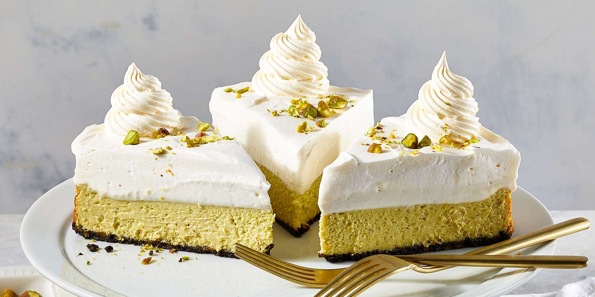

Choco-Pistachio Cheese Cake

A ready dessert cake comprising of cheese, chocolate n pistachio
They say imitation is the sincerest form of flattery. In that spirit, we're knocking off indulgent layered cheesecake with a healthier version.
Ingridients
- 3 ounces chocolate wafer cookies
- ¾ cup raw unsalted pistachios, divided, plus more for garnish
- 2 tablespoons granulated sugar
- 2 tablespoons butter, melted
- 2 (8 ounce) packages reduced-fat cream cheese (Neufchâtel), softened
- 1 avocado, peeled, seeded, and mashed until smooth (1/2 cup)
- 2 cups fat-free plain Greek-style yogurt
- 2 tablespoons cornstarch
- ¾ cup granulated sugar
- 2 large egg whites
- 1 teaspoon almond extract
- ⅛ teaspoon salt
- ¼ cup whipping cream
- 2 tablespoons powdered sugar
- 1 teaspoon vanilla extract
- 1 (16 ounce) container frozen nondairy low-fat whipped topping, thawed, plus more for garnish
Directions
- Preheat the oven to 325 degrees F (165 degrees C).
Coat a 9-inch springform pan with cooking spray.
- In a food processor, pulse cookies, 1/4 cup pistachios, and 2 tablespoons sugar until mostly finely ground.
(It's OK to leave some texture.) Add melted butter; pulse to combine. Spread mixture evenly in the prepared pan and press firmly into bottom of pan.
- For pistachio butter, blend remaining 1/2 cup pistachios in a small food processor until very smooth and slightly loose consistency, about 5 minutes. Transfer pistachio butter to a large bowl; add cream cheese, avocado, 1 cup yogurt, cornstarch, and 3/4 cup white sugar. Beat with an electric mixer at medium speed just until mixture is nearly smooth. Add egg whites, almond extract, and a pinch of salt; beat until just combined.
Spread over prepared crust.
- Bake until surface near edges appears set when gently wiggled, about 40 minutes. Turn off oven. Let cheesecake stand in oven 30 minutes. Cool in pan on wire rack 15 minutes. Using a thin metal spatula, loosen cheesecake from sides of pan.
Cool completely.
- For mousse, beat whipping cream, powdered sugar, vanilla, remaining 1 cup yogurt and a pinch salt in a bowl with an electric mixer at medium-low speed until fluffy, about 4 minutes.
Spread over cheesecake.
- Spread whipped topping over mousse. Chill, covered, at least 4 hours or up to 5 days.
To serve, remove from pan, slice, and garnish with additional whipped topping and pistachios.
Cook's note:
Replacing some of the cream cheese with pistachios, avocado, and yogurt cuts saturated fat and increases fiber while keeping it creamy. Adding pistachios to the crust keeps it crunchy with less cookie crumbs.
Using a low-fat whipped topping in place of whipping cream helps lower saturated fat.
Nutritions facts per serving include;
- 785 calories
- 75g fat
- 81g carbs
- 18g proteins